请你选择拜入的门派和角色
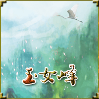
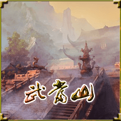
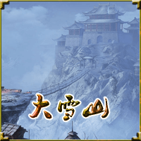
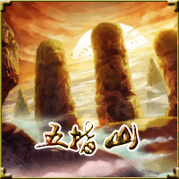

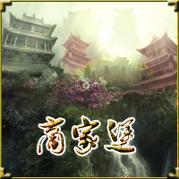
确 定
生命：
内力：
兵器：
服饰：
第1 关
123
生命：
内力：
兵器：
服饰：
出 牌
放 弃
确 认
选择击破对方装备系统的角度:
兵器
服饰
选择击破对方装备系统的角度:
抽对手一张手牌
再摸两张牌
你选择你想要的一张牌！
对手把自己手中的兵器赐予你，你是否接受？
接受：对手回复血1个，你得到对手的兵器；拒绝：对手再得到两张牌
接受
拒绝
解锁[]条件
需要金币：200
知道了
解锁[]条件
需要金币：200
解锁
放弃
战斗胜利
挑战完成:
战报:
《潜龙勿用》战报：今日申时，我与花间派掌门李清照决战于玉女峰，在23回合94招内获胜！我最后一招是“加力”后的“拳攻”，李清照一声惨叫， 像一捆稻草般飞了出去，恐怕下半生要在轮椅上度过，啊哈哈~（已完成20%任务） 作者@浙小孩 游戏网址www.zhexiaohai.com
奖励金币:
+200
奖励经验:
+100
获取额外奖励
额外:
？？？
查看我的江湖档案
继续
战斗失败
承让了！
返回首页
战斗胜利
恭喜通关！
获得【奖杯】
不过以你现在的资质要挑战魔王，恐怕...
获得【奖杯】
不过以你现在的资质要挑战魔王，恐怕...
继续修炼
我的江湖档案
方兰生是一位18岁的男性，长的眉清目秀，双目有神。武功看起来登峰造极，出手似乎比大象还重（等级：18 金币：2000 经验：800）
返回
江湖排名
99
娜可露露
22岁
登峰造极 / 眉清目秀
99
娜可露露
22岁
登峰造极 / 眉清目秀
99
娜可露露
22岁
登峰造极 / 眉清目秀
99
娜可露露
22岁
登峰造极 / 眉清目秀
99
娜可露露
22岁
登峰造极 / 眉清目秀
99
娜可露露
22岁
登峰造极 / 眉清目秀
99
娜可露露
22岁
登峰造极 / 眉清目秀
99
娜可露露
22岁
登峰造极 / 眉清目秀
一共有9999名玩家信息，你的排名是9999位
99
娜可露露
22岁
登峰造极 / 眉清目秀
返回
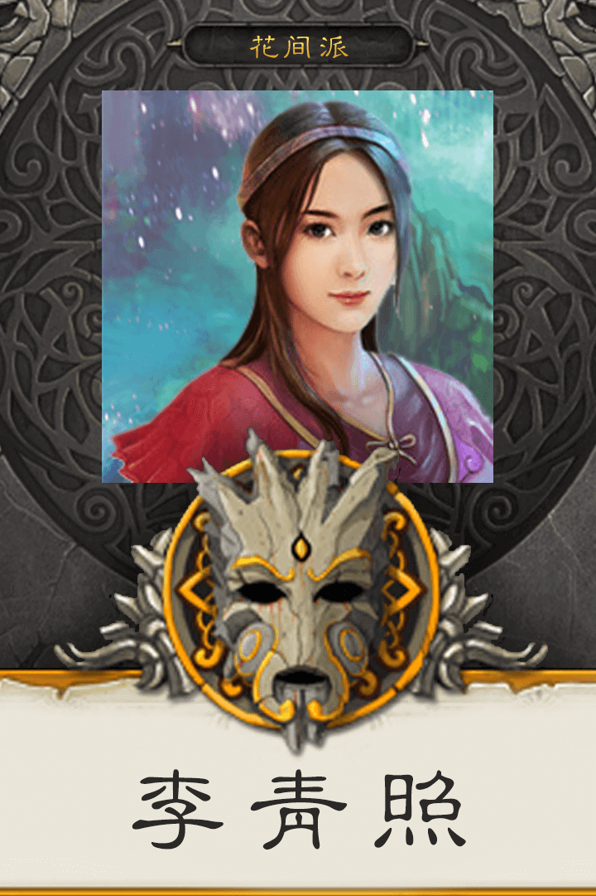
欧阳少恭
仪表堂堂，相貌英俊22岁Lv5
武功:罕有敌手
出手:比大象还重
兵器:2把
服饰:百宝缎衫
体力:0
内力:0
经验:0
金币:0
0
0
0
分享到微博
欧阳少恭是一位20岁的男性，长的眉清目秀，双目有神。武功看起来登峰造极，出手似乎比大象还重（等级：18 金币：2000 经验：800）
导入新浪微博的资料到游戏
江湖排名
游戏简介
这是一个侠情、热血的真正江湖，各路武林英雄汇聚一堂，你要演绎一位拯救江湖的豪侠，还是野心勃勃的武道家，全由你来决定；刀剑鞭杖、裙衫甲盔随你用，九大门派任你选，还不快开始你的江湖之旅吧！
游戏规则
1.本游戏为武侠卡牌游戏，首先你要选择使用的门派，然后进入对战界面，你只需要用你手中的牌放倒对手就行，怎么样，是不是很简单，啦啦啦。
2.当然，随着游戏的深入，对手会变得越来越强！你必须好好思考用牌策略，了解你的门派和对手的绝技是关键，知己知彼，百战不殆！
3.如果对手实在太厉害，可以去商城买点道具，必要的时候能让你扭转乾坤！
4.什么，老兄，你第一关都没闯关去？那你要好好看看下面的“卡牌简介”模块，它能迅速让你上手。
卡牌简介
| 卡牌 | 用法 |
| 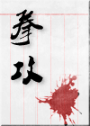 | 即“拳脚攻击”，此牌可对敌人造成1点伤害。 |
| 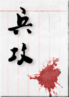 | 即“兵器攻击”，此牌可对敌人造成2点伤害，前提是先要装备上“兵器”。 |
 | 此牌可抵消敌人的“拳攻”、“兵攻”。 |
| 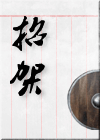 | 此牌可抵消敌人的“拳攻”、“兵攻”（除了“加力”后的攻击）。 |
| 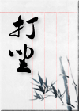 | 此牌可增加1点内力。 |
| 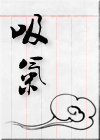 | 此牌会消耗1点内力，同时恢复体力1点。 |
| 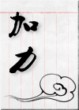 | 此牌会消耗1点内力，“加力”后的“拳攻”、“兵攻”，对手只能“躲闪”，不能“招架”；同时“加力”后的伤害加1。 |
| 即“门派令牌”，此牌可对敌人造成1点伤害。对手可用“拳攻”或“兵攻”抵消。 | |
| 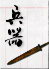 | 此牌可装备“兵器”；若已装备“兵器”，此牌可重新换取一张新的卡牌。 |
| 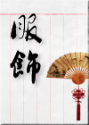 | 此牌可装备“服饰”，体力上限加1，同时一定几率能减缓敌人对你的伤害。若已装备“服饰”，此牌可重新换取一张新的卡牌。 |
| 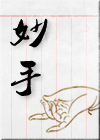 | 此牌有两种效果可选，1.抽取对手卡牌1张。2.自己获得2张卡牌。 |
| 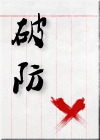 | 此牌可用来弃置对手的装备1件，“兵器”或“服饰”。 |
| 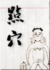 | 此牌使用时需作判断，若对手卡牌中没有“打坐”，“点穴”即算成功，对手将无法进行出牌；反之，“点穴”视作失败，自己要损失卡牌1张。 |
| 另外还有“御剑”、“飞翔”、“烟幕”、“法力”、“分身”、“暗器”等等特殊卡牌，为各门派特有，需玩家自己去发现。 |
特殊说明
1.本游戏虽然是为移动端开发的页面游戏，但是在电脑的浏览器上玩更加流畅！推荐浏览器：谷歌浏览器、火狐浏览器。
2.本游戏为自动存档机制，数据保存在浏览器上，所以玩家要在同一个浏览器上玩哦。注意，游戏过程不会被保存。另外不要手动或用工具(如**安全卫士)清除浏览器的记录，否则游戏数据也会被清除。
3.游戏为回合制，在你的回合中，灰色的卡牌是不能用的，剩下的卡牌随你出，如果不想再出牌，点击“放弃”后，轮到对手出牌。注意，自己的手牌最多保留4张，如果超过4张，需要丢弃多余的卡牌。
4.你的开牌下方第一排的按钮是你可用的绝技，通常第一个门派绝技是基础技能，不需要消耗内力；后面的需要内力支持。当使用条件满足时，按钮是彩色的，点击按钮就可以使用门派绝技。条件不满足的时候是灰色的按钮，说明暂时不能使用。
5.在一个回合里，最多只能使用1张“拳攻”或“兵攻”。
6.在一个回合里，最多只能使用2张“打坐”。
7.胜负判断：当一方的体力值小于等于0的时候即为输。当玩家胜利后，将获得金币和经验的奖励，随即进入下一关的对决。
8.如果要分享你的资料到QQ空间，可以复制相关文字，点击分享按钮，弹出一个框，粘贴即可。
lv:
[包治百病的板蓝根] 体力上限+1
金币：
点击购买
lv:
[内丹] 内力上限+1
金币：
点击购买
lv:
[驻颜术] 改变容貌1次
金币：
点击购买
lv:
[长生丹] 年龄+1
金币：
点击购买
lv:
[福缘] 初始手牌增加一张
金币：
点击购买
lv:
[声望] 保留手牌+1，等级至少40
金币：
点击购买
lv:
[怒气] 一定几率下发牌数+1
金币：
点击购买
lv:
[奔雷刀] 刀系门派上场默认装备
金币：
点击购买
lv:
[古剑] 剑系门派上场默认装备
金币：
点击购买
lv:
[红拂] 鞭系门派上场默认装备
金币：
点击购买
lv:
[疯魔杖] 杖系门派上场默认装备
金币：
点击购买
lv:
[百宝缎衫] 上场默认装备
金币：
点击购买
lv:
[玉衡] 增强装备防御功效
金币：
点击购买
lv:
[月光宝盒]战败后可继续挑战本关
金币：
点击购买
lv:
[续命膏]战败后将生命恢复至一点
金币：
点击购买
购买条件
客官，您身上好像没有那么多钱吧。
哦
购买条件
需要金币
确认
放弃
购买成功
提示
是否结束本关挑战？（小提醒：退出后，就得从第一关开始挑战哦~）
嗯嗯！
不要啦~
loading...
新手教程
大侠，您是初来的吧~ 如果您还不是特别了解本游戏规则，请点击“观看”，开启新手教程哦~ 由作者亲自从旁指点，手把手教学！
以后再说
观看教程
点击这里，永久关闭教程
（1/10）默认开启的门派，你可以直接使用哦~点击它你就可以使用该门派的角色。不同的门派拥有各自的绝技！
知道啦
（2/10）这些标有“尚未解锁”的门派，需要用金币开启，开启之后就可以使用该门派的角色，解锁不同门派所花费的金币都是不同。
嗯嗯
（3/10）这是对手的操作面板，显示了对手角色、生命值、内力值、武器和服饰，另外还有对方的手牌数量，当然，你是看不到他的牌型的。
我明白了
（4/10）这边是你的操作区域。
好哒
（5/10）这是你的手牌，点击其中一张你想打出的牌，该牌就会上移，表示此牌已经选中。
嗯嗯
（6/10）点击这个“出牌”按钮，就可以将选中的牌打出去，对手会对你打出的牌做出回应。然后你继续出牌，直到你不想出牌为止。
我知道啦
（7/10）当你不再想出牌了，你可以点击这个“放弃”按钮，结束你的回合。另外，在对手回合时，你无法回应对手打出的牌，也需要点击“放弃”按钮。
我知道啦
（8/10）这边是你的门派绝技，当使用条件满足的时候，按钮就会变成红色，点击即可使用绝技。
我知道啦
（9/10）点击你的头像，就能显示本派绝技的使用条件和作用。
我知道啦
（10/10）点击这里可以返回主菜单。
恭喜！您已经完成新手教程
出牌小助手[关闭]
使用道具
你目前体力不支，可以考虑使用以下道具
月光宝盒 ×3
续命膏 ×3
不想使用道具
李青照
我知道了